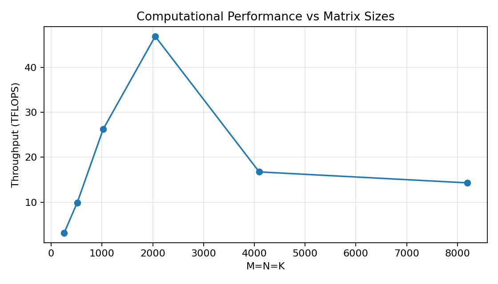
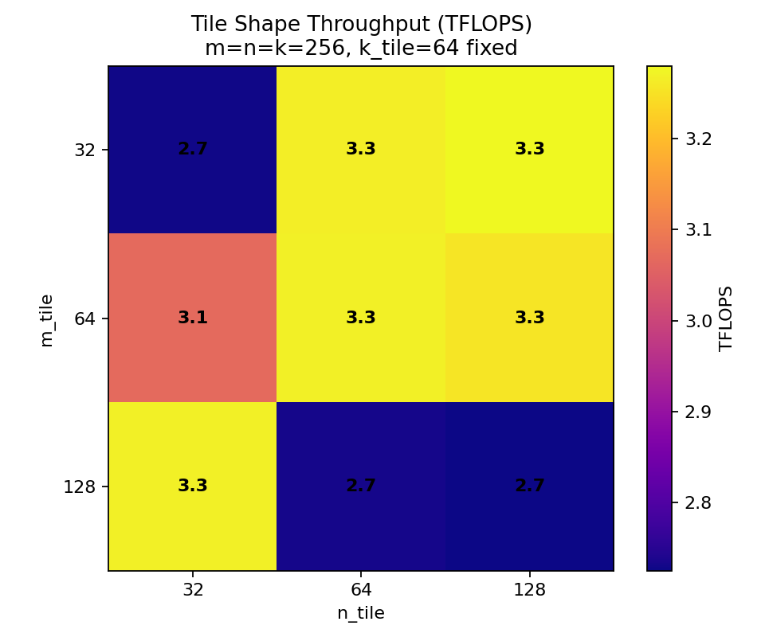
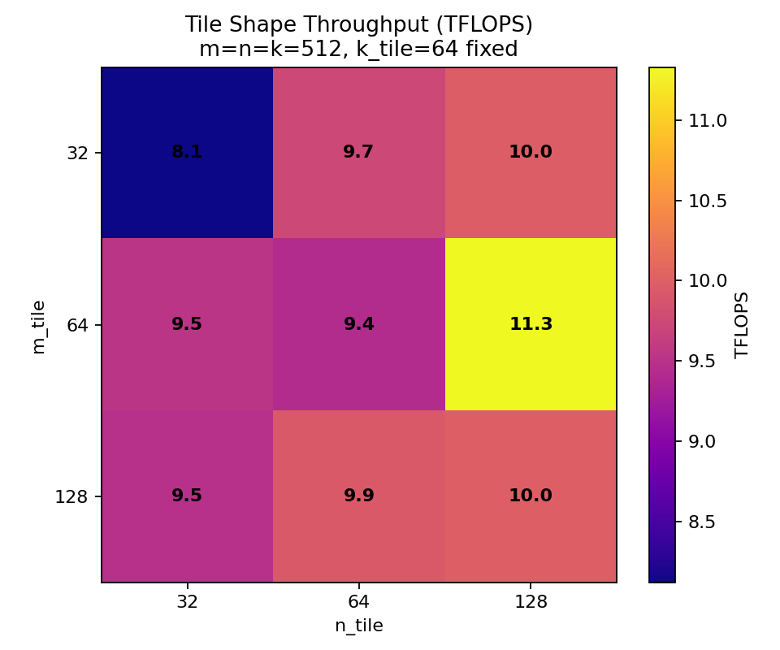
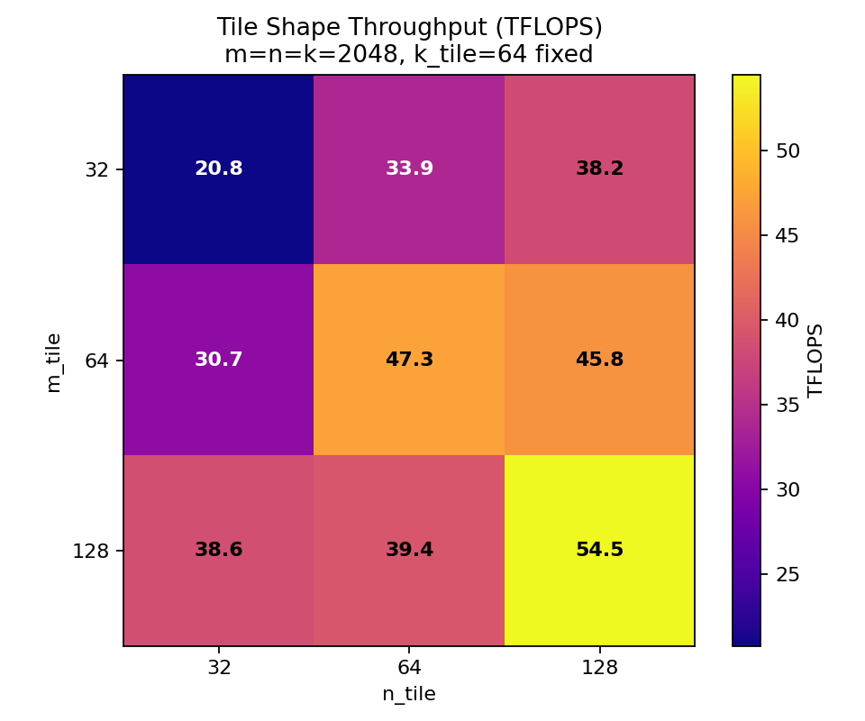

Matrix Multiplication with cuTile
Task 1: FP32 vs FP16 Performance
Our FP16 and FP32 kernels are implemented equally:
1@ct.kernel
2def kernel_fp16(A, B, C):
3 acc = ct.zeros((M_TILE_SIZE, N_TILE_SIZE), dtype=torch.float32)
4
5 for k in range(4096 // K_TILE_SIZE): # loop over K-tiles inside the kernel
6 tile_A = ct.load(A, index=(0, k), shape=(M_TILE_SIZE, K_TILE_SIZE))
7 tile_B = ct.load(B, index=(k, 0), shape=(K_TILE_SIZE, N_TILE_SIZE))
8 acc = ct.mma(tile_A, tile_B, acc)
9
10 ct.store(C, index=(0, 0), tile=acc)
11 return
However, the data types for the input matrices differ between the two kernels:
1 # FP16: Matrix initialization
2 A16 = torch.rand(64, 4096, dtype=torch.float16, device='cuda')
3 B16 = torch.rand(4096, 64, dtype=torch.float16, device='cuda')
4
5 # FP32: Matrix initialization
6 A32 = torch.rand(64, 4096, dtype=torch.float32, device='cuda')
7 B32 = torch.rand(4096, 64, dtype=torch.float32, device='cuda')
After implementing both, the FP16 and the FP32 kernel, we measured the following execution times:
Benchmark (ms per launch):
FP16 time: 0.028004568445800248
FP32 time: 1.7323399588076567
These measurements show that the speedup of the kernel_fp16 over kernel_fp32 is about 87.
This shows that performing calculations at a lower precision results in significant performance gains.
Task 2: Simple Matrix Multiplication
Implementing the matrix multiplication kernel using ct.mma, we followed the provided instructions.
The two input matrices
AandBare created with dimensions in the range from1to4096.Our grid depends on the amount of tiles for the
nandmdimension.
1 grid = (ct.cdiv(n, tN) * ct.cdiv(m, tM), 1, 1)
The kernel itself uses the block id to calculate the
rowandcolumnaccording to a row-major format. By adding the padding mode to thect.loadoperations, we are also handling matrix sizes that are not powers of 2.
1@ct.kernel
2def mma_kernel(A, B, C, tM: ConstInt, tN: ConstInt, tK: ConstInt):
3 bid = ct.bid(0)
4
5 # index calculation
6 num_tiles_k = ct.cdiv(A.shape[1], tK)
7 num_tiles_n = ct.cdiv(B.shape[1], tN)
8 m = bid // num_tiles_n # row
9 n = bid % num_tiles_n # col
10
11 acc = ct.zeros((tM, tN), dtype=torch.float32)
12
13 for k in range(num_tiles_k):
14 tile_A = ct.load(A, index=(m, k), shape=(tM, tK), padding_mode=ct.PaddingMode.ZERO)
15 tile_B = ct.load(B, index=(k, n), shape=(tK, tN), padding_mode=ct.PaddingMode.ZERO)
16 acc = ct.mma(tile_A, tile_B, acc)
17
18 ct.store(C, index=(m, n), tile=acc)
19 return
Task 3: Benchmarking the Matrix Multiplication Kernel
Benchmarking the matrix multiplication kernel has been approached via a loop over the different matrix sizes and the different tile shapes.
The results for the different squared matrices can be found in task3_matrix_sizes.png.

These measurements show that the peak computational throughput can be achieved with matrices around a squared size of 2048 for a fixed tile shape of (64, 64, 64).
For larger matrices the throuphput reduces from around 48 TFLOPS to 18 TFLOPS and reduces even further with increasing dimension sizes.
This indicates that these fixed tile shapes can be useful for smaller matrix sizes (up to \(\approx\) 2048), while for larger matrix sizes different / larger tile shapes might perform better.
In the second benchmark we initially measured the TFLOPS for all 27 possible tile shapes and stored the results in respective csv files for the 256, 512 and the 2048 matrices.
It can be clearly seen that the throughput for the larger matrices is significantly higher.



In regards to the best-performing tile shape combination the results also differ from one other.
For the 256 x 256 matrices there are several tile shapes with similar throughput values:
tM=32,tN=128,tK=64,3.2799 TFLOPStM=64,tN=64,tK=128,3.2769 TFLOPStM=64,tN=128,tK=128,3.2737 TFLOPStM=32,tN=128,tK=128,3.2731 TFLOPStM=128,tN=64,tK=128,3.2711 TFLOPS
All of the values above have roughly a throughput of 3.27 TFLOPS.
Secondly, the results for the 512 x 512 matrices:
tM=64,tN=128,tK=64,11.3296 TFLOPStM=128,tN=64,tK=128,11.1169 TFLOPStM=64,tN=128,tK=32,10.8766 TFLOPStM=64,tN=128,tK=128,10.6779 TFLOPStM=128,tN=64,tK=128,10.2015 TFLOPS
This shows that the results for the five best performing tile-shapes are all within about one TFLOP.
For the 2048 x 2048 matrices the distinction between the results are more significant:
tM=128,tN=128,tK=64,54.4815 TFLOPStM=128,tN=64,tK=128,51.8625 TFLOPStM=64,tN=128,tK=128,49.8584 TFLOPStM=64,tN=128,tK=32,47.4245 TFLOPStM=64,tN=64,tK=64,47.3441 TFLOPS
If we cross-reference these results the tile shape that performs best on average is (128, 64, 128), ranking 5th, 2nd and 2nd in all three measurements.
Task 4: L2 Cache Optimization via Block Swizzling
a)
The important part for this task was to recalculate the block IDs for m and n:
1def swizzle_2d_from_bid(M, N, tM, tN, GROUP_SIZE, bid):
2 num_tiles_m = ct.cdiv(M, tM)
3 num_tiles_n = ct.cdiv(N, tN)
4
5 # Matrix A
6 # Row-Group: number of tiles in a group
7 num_row_group_tiles = GROUP_SIZE * num_tiles_n
8
9 # Row-Group + "general" ID in a Row-Group
10 row_group_id = bid // num_row_group_tiles
11 bid_in_row_group = bid % num_row_group_tiles
12
13 # Start of current Row-Group
14 first_bid_m = row_group_id * GROUP_SIZE
15
16 # Clamping
17 clamp_m = min(num_tiles_m - first_bid_m, GROUP_SIZE)
18
19 # Block-Group:
20 mn_block_group = clamp_m * GROUP_SIZE
21
22 # Column-Group + "general" ID in a Column-Group
23 col_group_id = bid_in_row_group // mn_block_group
24 col_id_in_group = bid_in_row_group % mn_block_group
25
26 # Start of the current Column-Group
27 first_bid_n = col_group_id * GROUP_SIZE
28
29 # Clamping
30 clamp_n = min(num_tiles_n - first_bid_n, GROUP_SIZE)
31
32 # New block IDs for m and n
33 bid_m = first_bid_m + col_id_in_group // clamp_n
34 bid_n = first_bid_n + col_id_in_group % clamp_n
35
36 return bid_m, bid_n
For each block in matrix C we need a corresponding tile from matrix A and from matrix B.
We start by calculating the number of tiles in a row-group, the current row group, and the block ID inside this row group.
A row-group spans GROUP_SIZE many rows and all columns (line 7).
With this transformation, it is then possible to calculate the starting row index of the current row-group (line 14).
In the case that the number of tiles along the m dimension does not match GROUP_SIZE, we clamp the result to handle the last, potentially smaller row-group (line 17).
Based on the information calculated for the row-group, we compute how many blocks are in a full column-group.
Next, we calculate the block ID information for the column-group. We use the block ID of the row-group to determine which column-group we are in, as well as the local block ID inside that group.
Then, similarly to the calculation for the row dimension, we determine the starting column index for the current column-group (line 27).
We also clamp in case the number of tiles in n does not match the GROUP_SIZE for the last column-group.
At last, we calculate the new m and n block IDs.
Note: We calculate the bid_m using the clamped value for n because indexing inside the mn-block-group follows row-major order, and therefore the row index depends on how many columns are available.
b)
All benchmarks were run with a GROUP_SIZE of 4.
When comparing the results for matrices of sizes 256 x 256, 512 x 512 and 2048 x 2048 to the benchmarks from task 2, we did not find any significant changes.
However, for \(m \times n \times k\) with the sizes \(8192 \times 8192 \times 4096\) the differences were significant.
For the matmul kernel from task 2 the best performing tile shapes are:
tM=128,tN=64,tK=32,26.785 TFLOPStM=128,tN=64,tK=128,26.486 TFLOPStM=128,tN=128,tK=64,26.103 TFLOPS
For the swizzled matrix kernel the throughput was significantly higher:
tM=128,tN=64,tK=128,62.949 TFLOPStM=128,tN=128,tK=64,62.776 TFLOPStM=128,tN=64,tK=32,58.826 TFLOPS
Looking at these results the best-perfoming tile shape is closely decided by (128, 64, 128) and (128, 128, 64).
Additional
After running the benchmarks with a GROUP_SIZE of 4 we compared these results with a benchmark run, where we set the GROUP_SIZE to 8.
With this new GROUP_SIZE value the benchmark results changed slightly:
tM=128,tN=64,tK=128,65.907 TFLOPStM=128,tN=128,tK=64,63.006 TFLOPStM=128,tN=64,tK=32,60.045 TFLOPS
These results indicate that the larger GROUP_SIZE slightly increases the performance, but more importantly the best-performing tile shape stays the same.
We chose a GROUP_SIZE of 4 and 8 to experiment with the L2 reuse compared to the memory footprint.
A larger GROUP_SIZE reuses each column-group more times within a mn_block_group.
Therefore, the DRAM traffic is reduced.
However, there is a trade off with the costs, as the working set in the L2 cache is larger, roughly \(GROUP\_SIZE \times tM \times K \times dtype\_bytes\) for the A row-group plus the column-group in B.
And looking at the benchmarks there are some significant differences especially for smaller tM values:
Rank |
tM |
tN |
tK |
|
|
Difference |
|---|---|---|---|---|---|---|
1 |
32 |
128 |
128 |
23.92 |
40.73 |
16.82 |
2 |
64 |
64 |
128 |
36.67 |
52.40 |
15.73 |
3 |
64 |
128 |
128 |
43.71 |
59.36 |
15.65 |
The gain comes from reduced DRAM traffic rather than having a too large working set in L2, because even when we use GROUP_SIZE=8 the working set stays well under 24 MiB capacity.
However, increasing the GROUP_SIZE to 16 would increase the working set significantly.
If we consider the largest tile-shapes (tM=128), k=4096, and FP16 we quickly approach the L2 capacity limit:
GROUP_SIZE_M = 4 and 8
The optimal GROUP_SIZE_M is not a single fixed value but depends on the problem size, which is exactly why we compared 4 and 8 instead of committing to one value.
The purpose of block swizzling is to keep the working set of a row-group and its corresponding column-group resident in the 24 MiB L2 cache so that the tiles of A and B are reused across a mn_block_group instead of being re-fetched from DRAM.
This gives us an upper bound on a useful GROUP_SIZE_M: the working set grows roughly linearly with GROUP_SIZE_M (\(GROUP\_SIZE\_M \times tM \times K \times dtype\_bytes\) for the A row-group), so the group size must be small enough to stay below the L2 capacity for the given M, K and tile shape.
For our two settings this means:
For the small matrices (
256,512,2048) the whole working set already fits comfortably in L2 for both4and8, so there is almost nothing to gain from swizzling, which matches the observation that the results barely change compared to task 2. Here a smallGROUP_SIZE_M(or even1) is sufficient.For the large
8192 x 8192 x 4096case the DRAM traffic dominates. IncreasingGROUP_SIZE_Mfrom4to8measurably improves throughput (up to \(\approx 17\) TFLOPS for smalltM), because more of the reuse is captured in L2 while the working set still stays under24 MiB. Pushing to16would exceed the L2 capacity for the largest tiles (see the estimate above) and is therefore expected to regress.
In short, GROUP_SIZE_M should be chosen as large as possible while keeping the row-group’s working set inside L2, and this bound scales with the matrix and tile dimensions.
Choosing it per matrix size, a small group for matrices that already fit in L2 and a larger group (bounded by the L2 estimate) for the large, DRAM-bound case, is therefore preferable to a single global constant, and 4/8 are the two representative points we used to demonstrate this trade-off.